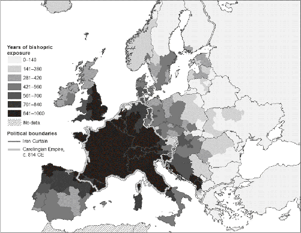
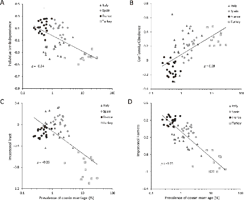
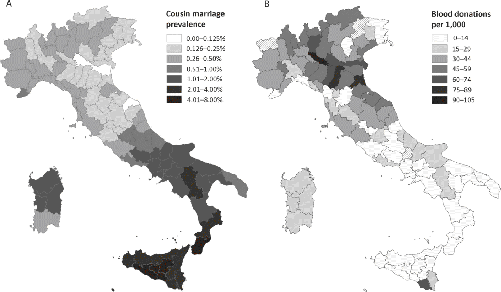
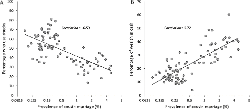
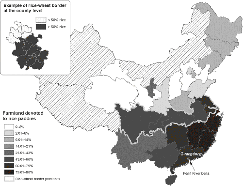
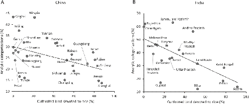

Due to the complex history of Europe, some regions received relatively small dosages of the Church’s Marriage and Family Program. For example, we saw in Chapter 5 (Figure 5.3) that while Ireland, Brittany, and southern Italy have long been Christian, they weren’t brought under the papal umbrella—and the full force of the MFP—until later than England and regions within the Carolingian Empire, including northern Italy and most of France and western Germany. This means that if the ideas I’ve presented hold water, we should be able to explain psychological variation just within Europe, and even within what was Christendom in 1500.
Exploring this is crucial because, while the cross-country relationships I presented in the last chapter are plentiful and often strong, there’s potentially an immense range of other hidden forces that vary from country to country. These include factors related to religion, history, colonialism, ancestry, language, and much more. Of course, we tried to statistically control for all of them in some way, but you can never be totally sure. Here, by zeroing in on Europe, I’ll show that it’s still possible to detect the footprints of the Western Church as it lumbered across medieval Europe—both in the psychology of contemporary Europeans and in the last remnants of Europe’s kin-based institutions. If we find patterns that parallel those found cross-nationally in the last chapter, now by comparing small regions within European countries, we can eliminate many alternative explanations.
Here’s the key question: Are individuals from European regions with longer exposure to the Church and the MFP more individualistic and independent, less obedient and conformist, and more impersonally trusting and fair today than those from less exposed regions?
Throughout this section, we’ll rely on a set of four measures drawn from the European Social Survey, which contains data from 36 countries. In each of the questions used to create the first two psychological measures, participants were asked to say how similar the individuals described were to themselves using a six-point scale from “not like me at all” to “very much like me.” The gendered pronouns in these statements were adjusted to fit the respondent. Here are the first two measures:
To assess people’s impersonal prosociality, participants were asked to respond to these questions on an 11-point scale (from 0 to 10):1
To examine whether the MFP can still be detected in European psychology, our team assembled a database that tracked the spread of 896 bishoprics across Europe. Using these data, we calculated the average Church exposure for Europe’s 442 regions, which I’ve mapped in Figure 7.1. In assessing a region’s dosage, we specifically focused on the presence of bishoprics under papal administration. In southern Spain and Italy, for example, some bishoprics were established early but were subsequently “disconnected” from the Western Church when the regions were conquered by powers unfriendly to the bishop of Rome. Islamic societies, for example, conquered much of Spain and parts of Italy over a period of several centuries. As these regions were later conquered and reincorporated under the Western Church, the bishoprics became “active” again in our dosage measures. Similarly, while Ireland was Christianized early, the Celtic Church didn’t enforce the MFP, so these regions didn’t come under papal administration—and the MFP—until around 1100.
Strikingly, our results show that individuals living in regions that experienced a longer duration of the MFP possess weaker inclinations toward conformity-obedience, stronger motivations for individualism-independence, and greater impersonal fairness and trust. Because we only compared regions within countries, these patterns can’t be due to contemporary differences among European countries in their national wealth, governments, or social safety nets. These results also hold after statistically removing the effects of people’s income, education, religious denominations, and reported religiosity. The fact that the local MFP dosage remained just as strong after statistically accounting for people’s religious denominations (Catholic, Protestant, Muslim, etc.) and personal religiosity is important, because we might worry that the effects of bishoprics operate through their influence on people’s supernatural beliefs or ritual attendance.

Of course, the founding of bishoprics in different places might have been influenced by some hidden forces that are actually doing the real work in shifting people’s psychology. So, we also statistically held constant the influence of many different geographic, ecological, and climatic factors, including agricultural fertility, rainfall, irrigation, temperature, and the ruggedness of the terrain. To capture various other historical forces, we statistically controlled for the presence of old Roman roads, monasteries, and medieval universities as well as for the region’s population density in 500. This should deal with differences in economic development and Roman influence at the start of the MFP. Even after all this, all four of our psychological measures still show a reliable relationship with the Church’s MFP dosage. To summarize, European communities in regions that spent longer under the sway of the MFP are psychologically WEIRDer today.
This connects the Church to contemporary psychology. However, if the causal pathway I’m tracking is correct, we should also expect places in Europe with less exposure to the Church to have stronger kin-based institutions.
Connecting a region’s Church exposure to the presence of intensive kinship is challenging, because detailed data from Europe on kinship are hard to come by, and the Ethnographic Atlas’s coverage of Europe is particularly poor (anthropologists avoid Europe—too WEIRD). The best source that my team has been able to locate, ironically, derives from papal dispensations that granted people permission to marry their first cousins. As noted earlier, the Church began permitting people to apply for special permission to marry their cousins during the latter half of the Middle Ages. Collating a variety of historical sources, our team gathered rates of first cousin marriages based on dispensation records for 57 different regions in France, Spain, and Italy in the 20th century. To highlight how powerful these effects are, we added data from regions in Turkey. Turkey is included in the European Social Survey because it’s partially in Europe, and our team was able to locate cousin marriage data for Turkey in another survey. Adding Turkey’s regions allows us to see that the insights extend outside of what was Latin Christendom. As expected, having never experienced the MFP, Turkey’s regions maintain higher rates of cousin marriage than those in Spain, Italy, and France.
Here’s the result: in regions with less MFP exposure during the Middle Ages, people were much more likely to still be asking for permission to marry their cousins in the 20th century. In fact, knowing the local MFP dosage allows us to explain nearly 75 percent of the variation in rates of first cousin marriage across regions in Italy, France, Turkey, and Spain. If we drop Turkey, MFP exposure still accounts for nearly 40 percent of the regional variation in cousin marriage. Put another way, for every century of MFP exposure, a region’s rate of cousin marriage drops by nearly a quarter.
Further confirming the historical narrative developed in Chapter 5, our analyses show that if a region was inside the Carolingian Empire during the Early Middle Ages, its rate of first cousin marriage in the 20th century was minuscule, and probably zero. If the region was outside the Carolingian Empire, as were southern Italy, southern Spain, and Brittany (France’s northwestern peninsula), the rate was higher. In Sicily, there were so many requests for dispensations to marry cousins in the 20th century that the pope delegated special power to the bishop of Sicily to allow marriages between second cousins without the Vatican’s permission. Normally, dispensations were (and remain) a papal privilege, but the demand was so high that an exception was necessary.2
To complete this picture, let’s examine the relationship between the prevalence of first cousin marriages—standing in as our proxy for intensive kinship—and our four dimensions of psychology from the European Social Survey. Based on responses from over 18,000 individuals from 68 different regions across four countries, people from regions with higher rates of cousin marriage in the 20th century show greater conformity-obedience, less individualism-independence, and lower levels of both impersonal trust and fairness. As Figure 7.2 shows, the effects are big. Simply knowing the rate of cousin marriage allows us to explain between 36 percent (conformity-obedience) and 70 percent (impersonal fairness) of the regional differences in our four psychological dimensions, from cosmopolitan France to the remotest parts of southeastern Turkey. The figure illustrates—and our statistical analyses confirm—that although the variation in cousin marriage is much smaller within European countries, the broader trends mostly hold. Our analyses also confirm that these findings cannot be accounted for by differences in individual income, schooling, religiosity, or religious denomination.3

Although the analyses displayed in Figure 7.2 are based on sparse data from various corners of Europe that received lower dosages of the MFP for idiosyncratic historical reasons, they nevertheless illuminate a portion of the pathway that runs from the MFP through the historical dissolution of intensive kinship and into the minds of contemporary Europeans.
Now let’s zoom in even closer to focus on an enduring puzzle in the social sciences: the Italian enigma. While northern and central Italy emerged as powerful banking centers in the Middle Ages, stood at the center of the Renaissance, and prospered along with much of northern Europe during the Industrial Revolution in the 19th century, southern Italy has economically slogged along behind, becoming instead an epicenter for organized crime and corruption. Why?
You’ve already seen one clue to this puzzle in Figure 5.3. That map shows that southern Italy was never conquered by the Carolingian Empire and remained largely outside of the Holy Roman Empire. In fact, it wasn’t fully incorporated under the papal hierarchy until after the Norman conquests of the 11th and 12th centuries. Prior to this, Sicily had been under Muslim rule for roughly two and a half centuries, and much of the southern mainland had been under the control of the Eastern Empire and the Orthodox Church.
The imprint of this history can be seen in the prevalence of cousin marriages across Italian provinces in the 20th century, based again on Church dispensations for cousin marriage (Figure 7.3A). In northern Italy, which has been largely under the Western Church since the MFP began, the frequency of cousin marriage is less than 0.4 percent, and sometimes as low as zero. As we look south, rates of cousin marriage increase, rising to over 4 percent at the tip of the Italian boot and in much of Sicily. Keeping in mind that cousin marriage is both an important element of intensive kinship by itself and a proxy for other social norms, have a look at Figure 7.3B, which maps the frequency of voluntary (unpaid) blood donations across 93 Italian provinces in 1995. Remember, voluntary anonymous blood donations provide an important public good and a way of helping strangers. Notice any patterns when you compare panels A and B of Figure 7.3?
Strikingly, the lower the prevalence of cousin marriage in a province, the higher the rate of voluntary blood donations to strangers. In southern Italy, including almost all of Sicily, the rates of blood donations are near zero. In some northern provinces, they reach 105 donations (16-ounce bags) per 1,000 people per year. Knowing just the rate of first cousin marriage allows us to account for about one-third of the variation in donations across Italian provinces. Put another way, doubling the rate of cousin marriage from, say, 1 percent to 2 percent reduces blood donations by 8 bags per 1,000 people. That’s a big effect, given that the average donation for a province is only 28 bags per 1,000 people.4

Similar patterns emerge when we use real-world measures of people’s trust in impersonal organizations and strangers. Italians from provinces with more cousin marriage (1) use fewer checks, instead favoring cash; (2) keep more of their wealth in cash instead of putting it into banks, stocks, etc.; and (3) take more loans from family and friends than from banks. The effects are striking: the use of checks plummets from over 60 percent in Italian provinces with low cousin marriage to just above 20 percent in provinces with relatively high rates of cousin marriage (Figure 7.4A). Similarly, the percentage of wealth that households keep in cash goes from about 10 percent in provinces with rates of cousin marriage near zero to over 40 percent in provinces with high rates of cousin marriage (Figure 7.4B). Using detailed data on individuals, these relationships hold even after statistically controlling for the influence of income, wealth, formal schooling, and family size.5
Corruption and Mafia activity reflect the same patterns seen for blood donations and impersonal trust. The greater the rate of cousin marriage in a province, the higher the rates of corruption and Mafia activity. There’s a reason why the Mafia is often referred to as “the family” or “the clan” and the boss is sometimes called “the godfather.” The strength of in-group loyalty and the power of nepotism in societies with intensive kinship create precisely the kind of psychology and social relations that foster graft and fuel organized crime. These patterns have developed despite Italy’s formal governing and educational institutions, which are like those in other western European countries.6

Every year, people from all over the world immigrate to different European countries. Eventually, many of these first-generation immigrants have children, who grow up entirely in Europe, speak the national language perfectly, and attend the local schools. We can learn a lot by comparing these second-generation immigrants. Using data from the European Social Survey from roughly 14,000 second-generation immigrants spread across 36 countries, we can compare the psychological outcomes of individuals who were born and raised in the same European country but whose parents arrived from diverse places. We assigned each individual a value for the Kinship Intensity Index (KII) and the prevalence of cousin marriage based on either their parents’ countries of origin or the languages spoken in their homes. Then we analyzed the same four psychological dimensions studied above.
The results are illuminating: individuals whose parents came from countries with higher Kinship Intensity Indices or more cousin marriage were more conformist-obedient, less individualistic-independent, and less inclined to trust or expect fair treatment from strangers. These relationships remain strong even after we statistically accounted for differences in income, education, religious denomination, religiosity, and even people’s personal experience of discrimination. They even hold if we only compare individuals living within the same small regions that we used above in examining the impact of different MFP dosages (Figure 7.1).7
The consistent and robust impact of historical kinship intensity on the psychology of second-generation immigrants reveals that an important component of these psychological effects is transmitted from one generation to the next, and not simply due to people’s direct exposure to poor governments, social safety nets, particular climates, endemic diseases, or oppression by the native population in the immigrant’s new home. Rather, these psychological differences persist in the adult children of immigrants both because migrants often re-create the intensive kin-based institutions found in their countries of origin (e.g., arranged marriages with cousins) and because particular ways of thinking and feeling are learned from parents, siblings, and those in newly formed social networks. Culturally transmitted aspects of psychology can persist long after the actual kinship practices related to polygyny, cousin marriage, and clans have disappeared.8
The same patterns emerged when we linked second-generation immigrants to the dosage of Church exposure experienced back in their parents’ countries of origin. Individuals whose parents’ native countries had been under the Western Church for longer were more individualistic-independent, less conformist-obedient, and more inclined toward impersonal trust and fairness.
The idea here is that the medieval Church shaped contemporary psychology through its demolition of Europe’s kin-based institutions. However, as I’ve noted, the intensity of kinship has also been shaped by other factors, including ecology and climate. A powerful way to test the ideas I’ve developed is to step away from Europe to consider how, in the absence of the Church, ecological factors might have intensified kin-based institutions and in turn induced similar psychological patterns.
Kinship intensity in China, and probably much of Asia, is linked to a combination of ecological and technological factors related to rice cultivation and irrigation. Specifically, in the preindustrial world, rice paddies could be incredibly productive—in terms of their yield per acre of land—compared to crops like wheat, corn, or millet. However, sustaining a high level of productivity for wet rice agriculture required the cooperation of relatively large groups. A single farming household simply couldn’t construct, maintain, and defend the irrigation canals, dikes, and terraced fields, or handle the labor demands involved in weeding, fertilizing, and replanting seedlings from germination beds. As you now know, clan-based organizations foster precisely the kind of tight-knit, top-down organizations needed to tackle such cooperative challenges.9
Historically, the relative importance of paddy rice in China rose substantially after the 10th century, sparked by the arrival of new, quick-ripening varieties of wet rice from Southeast Asia. This was further fueled by the migration of northern farmers to the south and east, propelled by a combination of climatic shifts and increasing raids by Mongolian herders. Over about 800 years, this resulted in the gradual spread and intensification of patrilineal clans in various regions of China, but particularly in regions with the greatest potential for paddy rice. By the early 20th century, clans corporately owned about a third of the cultivated land in Guangdong Province and roughly 44 percent in the Pearl River delta.10
Today, China’s provinces vary dramatically in the amount of agricultural land devoted to paddy rice (Figure 7.5). Moving from the south to the north, regional populations gradually decrease their reliance on paddy rice while increasing their cultivation of other staples, such as wheat and corn. The darker the shading in Figure 7.5, the greater the proportion of cropland devoted to paddy rice. This situation provides a natural experiment by creating variation in the intensity of kinship—and specifically in the importance of clans—that can be traced to an environmental factor: the ecological suitability of an area for paddy rice. We can link this ecological variation to psychological differences across China.11
To date, I have not obtained and analyzed detailed statistical data on features like cousin marriage, polygyny, and postmarital residence within China, so I can’t produce a historical Kinship Intensity Index for China like the one used in the last chapter. However, data on the historical importance of clans across provinces confirm that the greater the percentage of agricultural land devoted to paddy rice cultivation within a province, the more prevalent and important were patrilineal clans.12
Directly linking agricultural practices to psychological differences, the psychologist Thomas Talhelm and his team administered a package of three different experimental tasks to over a thousand Han participants from 27 Chinese provinces at six different universities. The three tasks they administered are set out on the next page.13

The results that Talhelm and his team found largely converge. In the In-group Favoritism Task (involving the “business partner”), Han Chinese participants from provinces that put a higher percentage of cropland under paddy rice cultivation tended to reward their friends more for honesty and punish them less for dishonesty than did those from other provinces. That is, those from more intensive paddy rice regions revealed greater loyalty (or more cronyism) toward their friends. Those from regions less reliant on paddy rice treated strangers and friends more similarly.
In the Self-focus Task, those from provinces with less paddy rice cultivation tended to inflate their self-circles more than they did their friend-circles. Cutting the data into two groups starkly reveals the effect: those from provinces where less than half of the agricultural land is under paddy rice cultivation inflated their circle by 1.5 millimeters (on average) relative to their friends, while those from provinces where over half of the cultivated land is rice paddies represented themselves as roughly the same size as their friends (approximately 0 mm difference). Less wet rice cultivation is associated with greater self-focus. Of course, by WEIRD standards, a self-inflation of 1.5 mm isn’t that “impressive”: Americans inflate themselves by 6.2 mm, Germans by 4.5 mm, and Brits by 3 mm. In Japan, another place with lots of rice paddies, people draw themselves as slightly smaller than their friends (−0.5 mm).15
In the Triad Task, people from provinces less dependent on paddy rice cultivation were more inclined to think analytically (Figure 7.6A). The effects were substantial: the average percentage of analytic matches for a person from a “paddy rice province” like Jiangxi or Shanghai ranged from 10 to 20 percent—they are strongly holistic. Meanwhile, those from low-rice-production provinces like Qinghai or Ningxia preferred analytic matches just over 40 percent of the time. That is, in provinces that grow primarily wheat, corn, and millet (“non-rice” crops), people make almost as many analytic as holistic matches. This places these non-rice-growing populations right in the range typical of WEIRD undergraduates but still below the WEIRD adults at yourmorals.org (Figure 1.9). Overall, knowing the percentage of land devoted to paddy rice in a province allows us to account for about half of the variation among Chinese provinces in their analytic vs. holistic thinking.16
The breadth of these psychological differences, captured in three different experimental tasks, is particularly impressive, given that all the participants were Han Chinese university students (not farmers) at one of six universities. Despite this homogeneity in age, education, nationality, and ethnicity, Talhelm and his team uncovered substantial psychological differences.
These correlations between people’s psychology and paddy rice agriculture don’t tell us what causes what. Maybe certain aspects of psychology cause people to disdain rice, or to disdain the cooperative activities that are required to grow wet rice? Or, since rice growing varies roughly from south to north, perhaps some other economic or geographic factor that also varies from south to north causes people to both think more analytically and grow less rice. Taking advantage of the larger sample they gathered using the Triad Task, Talhelm’s team tackled these concerns in two ways. First, rather than using the actual prevalence of paddy rice farming—a behavior—they used a measure of a region’s “suitability for paddy rice” based purely on ecological variables like rainfall. Unlike the activity of cultivating rice, such rice-suitability measures cannot be caused by psychological differences among provinces. This measure of rice suitability, and a little statistical razzle-dazzle, allowed them to trace causal links from ecological conditions through agricultural practices to analytic thinking. That is, more holistic thinking probably cannot make it rain. This approach is not foolproof, but it’s a nice step toward establishing a causal link that runs from paddy rice to analytic thinking.18

Second, to better deal with potentially hidden factors associated with China’s north-south differences, Thomas’s team narrowed their focus to only those five central provinces right along the north-south divide (Figure 7.5). Here, they obtained data on paddy rice growing for all the counties within each province, which allowed them to compare counties that are side by side but differ in their reliance on wet rice. Comparing adjacent or nearby counties within the same province minimizes concerns about broader climatic, economic, political, and other cultural-historical differences between the north and the south. This analysis reveals that people in counties within the central border provinces show the same patterns of psychological variation observed across provinces at the country level: people in counties with more land devoted to rice were less analytically inclined than those from counties with fewer rice paddies. This confirms that we aren’t simply seeing some broad north-south difference.19
These patterns in China converge with two other lines of evidence. First, as a check on his efforts in China, Talhelm sampled about 500 people online from different states in India and administered both the Triad Task and his In-group Favoritism (“business partner”) Task. Crucially, India’s ecological gradient for paddy rice was similar to China’s, except that it runs east-west across the subcontinent instead of south to north. If the conclusions about the psychological variation in China are correct, we should see similar psychological differences.
Sure enough, Indians from regions that engage in less paddy rice cultivation are more analytic on the triads and less nepotistic (friend-favoring) on the business partner tasks, just like in China. Figure 7.6B shows the relationship between cropland devoted to rice for different Indian states and their percentage of analytic choices on the Triad Task. This relationship in India holds independent of the age, gender, income, and education of participants. Now, I don’t want to make too much of this one online study in India, but the fact that it confirms the same pattern seen in China, except now running east to west instead of south to north, makes idiosyncratic alternative explanations based on the details of Chinese history or geography seem unlikely.
The second piece of confirmatory evidence comes from a global study showing that the historical reliance of populations on irrigation—regardless of whether it’s for rice paddies or not—is related to psychological measures of individualism, tightness, and obedience. Those whose ancestors were more reliant on irrigation agriculture are now less individualistic, more concerned about adhering to social norms, and more serious about inculcating obedience in their children.20
Taken together, this evidence from China and India confirms that important psychological variation exists within large countries, and it bolsters the notion that more intensive kinship generates certain predictable patterns. Here, the Church wasn’t the cause of the variation in intensive kinship or psychology. Instead, certain ecological conditions created the potential for intensive agriculture, which in turn fueled the cultural evolution of highly cooperative, top-down, intensive kin-based institutions. Notably, however, the variation in intensive kinship created by this ecological variation is relatively small compared to the impact of the MFP—the Church nearly annihilated Europe’s clans, kindreds, cousin marriage, polygamy, and inheritance norms.
Nevertheless, for Europe, this suggests that the path to weak kin ties and WEIRD psychology may have been shorter in some regions, where ecological conditions didn’t favor super-strong kin-based institutions. That is, in the rain-fed, wheat-growing regions of northern Europe, the Church’s MFP may have faced somewhat less resistance in dismantling the more diffuse kin-based institutions of some northern European tribes. Of course, we statistically controlled for all known ecological and economic contributors to psychological variation (such as irrigation and disease prevalence), so the results you’ve seen above hold independent of these factors.21
In thinking about China, especially considering its massive economic growth since the market reforms of 1979, let me plant a mental seed that we’ll harvest later. Until the mid-20th century, many intensive kinship practices were common in China. Then, in 1950, at the culmination of a three-decade-long campaign to adopt/impose “modern” (European) marriage, the new communist government instituted the Marriage Law of the People’s Republic of China. Legally speaking, Articles 1, 2, and 3 of this law ended polygamy, arranged marriage, concubinage, child betrothal, forced remarriage of widows (levirate marriage), and marriage payments (e.g., dowry). Infanticide was also prohibited, and wives gained the right to both own property and inherit it from their husbands. In terms of marriage among relatives, only uncle-niece marriage was banned in 1950 (second-degree relatives, Article 5), but this expanded to include first cousins in 1980 (third-degree relatives, Article 6a). This Marriage and Family Program should sound familiar: the powerful Chinese state has been doing over the last seven decades what the Church required centuries to accomplish in medieval Europe.22
Let’s summarize the three major points in this chapter.
By 1000 CE, several regions of Europe had already experienced five centuries of the MFP. In these regions, which can be identified using our bishopric dosages (Figure 7.1), the Western Church had inadvertently induced a series of social and psychological shifts. Without intensive kin-based institutions to organize production, provide security, and endow people with a sense of meaning and identity, individuals were both socially compelled and personally motivated to relocate, seek out like-minded others, form voluntary associations, and engage with strangers. The relevant psychological shifts likely emerged in multiple ways: facultatively (on the fly), developmentally, and culturally. Research on the impact of relational and residential mobility suggests some role for both rapid psychological recalibrations to new circumstances and the enduring imprints of childhood experience. Psychologists have shown, for example, that priming people with settling down in a city vs. visiting it briefly immediately evokes different preferences: settling down causes people to facultatively value loyal friends, while shorter visits spark more egalitarian motivations. Meanwhile, research also points to developmental effects: young adults who moved geographically as children make less of a distinction between friends and strangers. Overall, greater residential mobility and more relational freedom (i.e., fewer constraints on new relationships) lead individuals to form larger social networks, favor new experiences, prefer novelty, and perhaps even think more creatively (see Appendix C).23
These psychological effects, some of which could be induced simply by increasing residential mobility and relational freedom, would have been especially strong among those moving into the towns, cities, and religious organizations that began growing in the 10th and 11th centuries. In assembling these new associations and organizations, the emerging proto-WEIRD psychology—analytic thinking, individualism, and a nonrelational morality—would have favored the development of both impartial rules that granted privileges and obligations to individuals (not clans) and impersonal mechanisms for enforcing trust, such as accounting records, commercial laws, and written contracts.
Of course, people are terrible at designing well-functioning formal institutions de novo. But, because this same process was occurring in many different European towns and cities, from northern Italy to England, cultural evolution could do the work. When a community or organization bumbled onto an effective combination of new formal institutions, norms, and beliefs, they prospered and consequently expanded by attracting new members. Such successful expansions led other organizations and communities to copy their practices and norms, which eventually spread in the form of written laws, organizational policies, and urban charters. As the most useful institutional elements were copied and recombined in different ways over centuries, effective formal institutional forms, which fit the developing proto-WEIRD psychology of the era, began to emerge for organizing and governing individuals (not families, kindreds, etc.). The new formal institutions increasingly fostered cooperation and mutually-beneficial exchanges among Christian strangers.
Before moving forward to examine the emergence of impersonal markets and their effects on psychology, I want to pause briefly to put one element of the Church’s MFP under the microscope so we can see something of how and why it works. Let’s take a close look at the social, psychological, and hormonal impacts of monogamous marriage and consider its role in the origins of WEIRD psychology and inclusive democratic institutions.